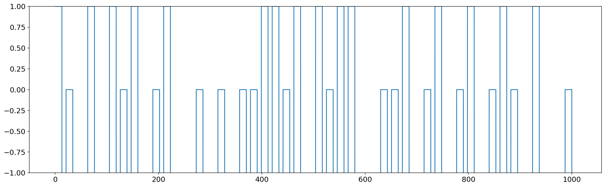

May 28, 2022: Create MAX dataset
May 28, 2022: Create MAX dataset¶
simple block design paradigm to study anxious apprehension by contrasting threat and touch conditions. threat is painful electrical stimulation and touch is a mild electric vibration.
import os
import sys
from os.path import join as pjoin
import numpy as np
import pandas as pd
import scipy as sp
import torch
import torch.nn as nn
print(torch.cuda.is_available())
import pickle, time, random
# import neural_structured_learning as nsl
from tqdm import tqdm
import json
from itertools import combinations, product
from operator import add
import copy
from glob import glob
# explanation tools
import captum
# plotting
import matplotlib as mpl
import matplotlib.colors as mcolors
import matplotlib.pyplot as plt
plt.rcParamsDefault['font.family'] = "sans-serif"
plt.rcParamsDefault['font.sans-serif'] = "Arial"
plt.rcParams['font.size'] = 14
plt.rcParams["errorbar.capsize"] = 0.5
# nilearn
from nilearn import image
from nilearn import masking
from nilearn import plotting
# main dirs
proj_dir = pjoin(os.environ['HOME'], 'explainable-ai')
results_dir = f"{proj_dir}/results"
month_dir = f"{proj_dir}/nb/jun22"
# folders
sys.path.insert(0, proj_dir)
import helpers.dataset_utils as dataset_utils
import helpers.base_model as base_model
import helpers.model_definitions as model_definitions
True
2022-05-30 12:42:14.108273: I tensorflow/stream_executor/platform/default/dso_loader.cc:53] Successfully opened dynamic library libcudart.so.11.0
def get_stim_file(subj, name):
if len(runs_to_exclude[runs_to_exclude.Subject == subj].values) == 0:
stim_path = f"{main_data_path}/stim_times_neutral"
else:
stim_path = f"{main_data_path}/stim_times_neutral/{subj}"
stim_file = []
with open(f"{stim_path}/{name}.txt") as f:
lines = f.read().split('\n')[:-1]
for run, line in enumerate(lines):
stim_file += [RUN_LEN*run + int(float(x) // TR) for x in line.split()]
return stim_file
TR = 1.25
RUN_LEN = 336
TRIAL_LEN = 14
IGNORE_IDX = -100
main_data_path = f"/home/govindas/vscode-BSWIFT-mnt/MAX"
runs_to_exclude = pd.read_csv(
f"{main_data_path}/scripts/runs_to_exclude_neutral.txt",
delimiter='\t')
# runs_to_exclude
data_path = (
f"{main_data_path}/dataset/first_level"
f"/ROI/neutral_runs_conditionLevel_FNSandFNT/MAX_ROIs_final_gm_85"
)
subjs = os.listdir(data_path)
names = ['FNS', 'FNT']
labels = [0, 1] # safe, threat
max_data_path = f"{proj_dir}/data/max/data_df.pkl"
if not os.path.exists(max_data_path):
subj_list, ts_list, targets_list = [], [], []
for subj in tqdm(subjs[:]):
subj_list.append(subj[-3:])
# # fMRI time series
ts = np.loadtxt(f"{data_path}/{subj}/{subj}_meanTS.1D")
ts_list.append(ts)
# targets
targets = IGNORE_IDX * np.ones(ts.shape[0])
for label, name in zip(labels, names):
stim_file = get_stim_file(subj, name)
for onset in stim_file:
targets[onset:onset+TRIAL_LEN] = label
targets_list.append(targets)
max_data_df = pd.DataFrame(
{
'subj': subj_list,
'ts': ts_list,
'targets': targets_list
}
)
with open(max_data_path, 'wb') as f:
pickle.dump(max_data_df, f)
else:
with open(max_data_path, 'rb') as f:
max_data_df = pickle.load(f)
100%|██████████| 109/109 [00:17<00:00, 6.13it/s]
max_data_df
| subj | ts | targets | |
|---|---|---|---|
| 0 | 101 | [[99.911173, 100.106857, 99.818666, 99.946479,... | [1.0, 1.0, 1.0, 1.0, 1.0, 1.0, 1.0, 1.0, 1.0, ... |
| 1 | 102 | [[99.771627, 100.445717, 100.180667, 100.66108... | [1.0, 1.0, 1.0, 1.0, 1.0, 1.0, 1.0, 1.0, 1.0, ... |
| 2 | 103 | [[100.334625, 100.048222, 99.437044, 100.31941... | [1.0, 1.0, 1.0, 1.0, 1.0, 1.0, 1.0, 1.0, 1.0, ... |
| 3 | 104 | [[99.893353, 99.483314, 99.43953, 99.47937, 10... | [1.0, 1.0, 1.0, 1.0, 1.0, 1.0, 1.0, 1.0, 1.0, ... |
| 4 | 105 | [[100.385149, 100.363788, 100.886609, 100.0057... | [1.0, 1.0, 1.0, 1.0, 1.0, 1.0, 1.0, 1.0, 1.0, ... |
| ... | ... | ... | ... |
| 104 | 220 | [[99.978948, 98.761013, 100.639615, 99.456786,... | [1.0, 1.0, 1.0, 1.0, 1.0, 1.0, 1.0, 1.0, 1.0, ... |
| 105 | 221 | [[100.310287, 99.472887, 99.550374, 100.059775... | [1.0, 1.0, 1.0, 1.0, 1.0, 1.0, 1.0, 1.0, 1.0, ... |
| 106 | 222 | [[100.253484, 100.124297, 100.428619, 100.6161... | [1.0, 1.0, 1.0, 1.0, 1.0, 1.0, 1.0, 1.0, 1.0, ... |
| 107 | 223 | [[99.696671, 99.817125, 99.75749, 99.49221, 10... | [1.0, 1.0, 1.0, 1.0, 1.0, 1.0, 1.0, 1.0, 1.0, ... |
| 108 | 224 | [[99.720094, 99.287733, 99.181557, 99.467205, ... | [1.0, 1.0, 1.0, 1.0, 1.0, 1.0, 1.0, 1.0, 1.0, ... |
109 rows × 3 columns
fig, ax = plt.subplots(1, 1, figsize=(20, 6), dpi=150)
ax.plot(targets)
ax.set_ylim(-1, 1)
plt.show()
